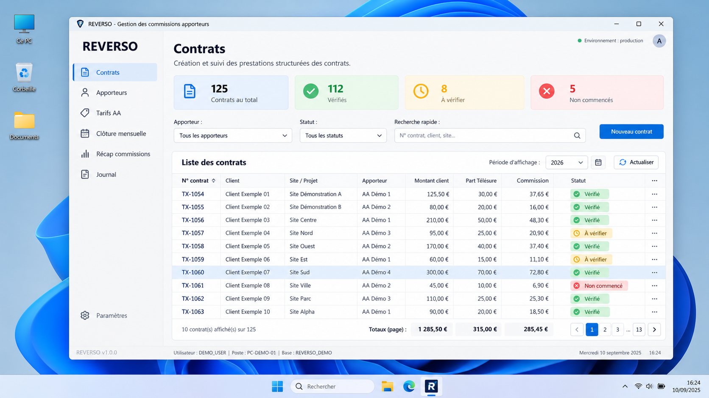
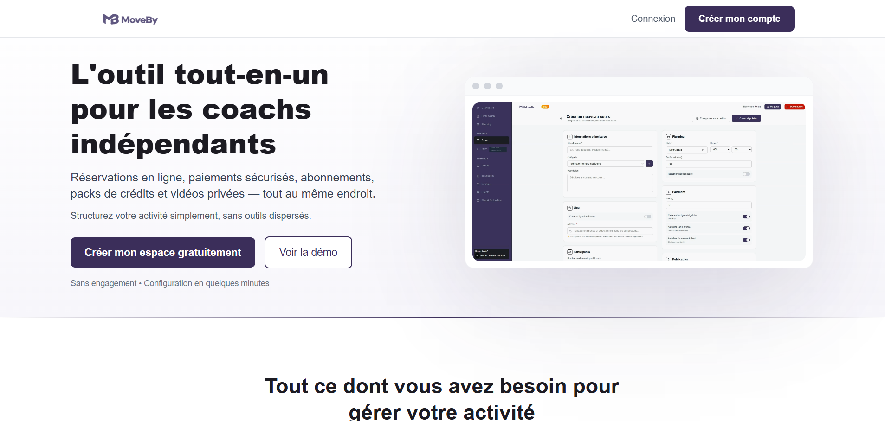
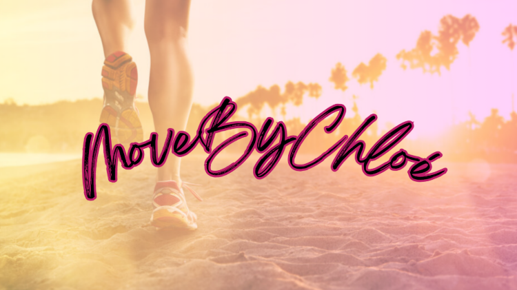
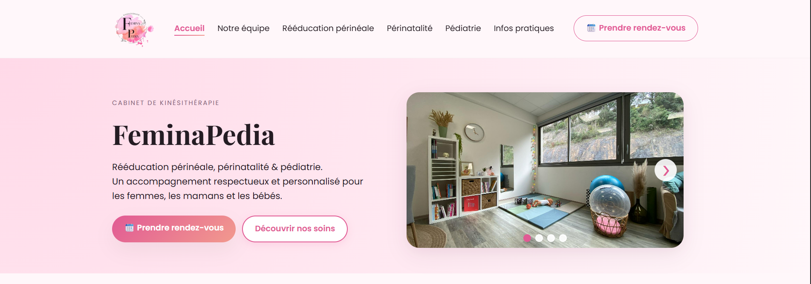
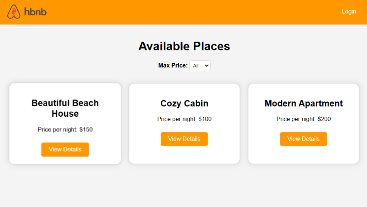
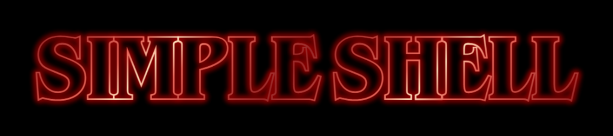
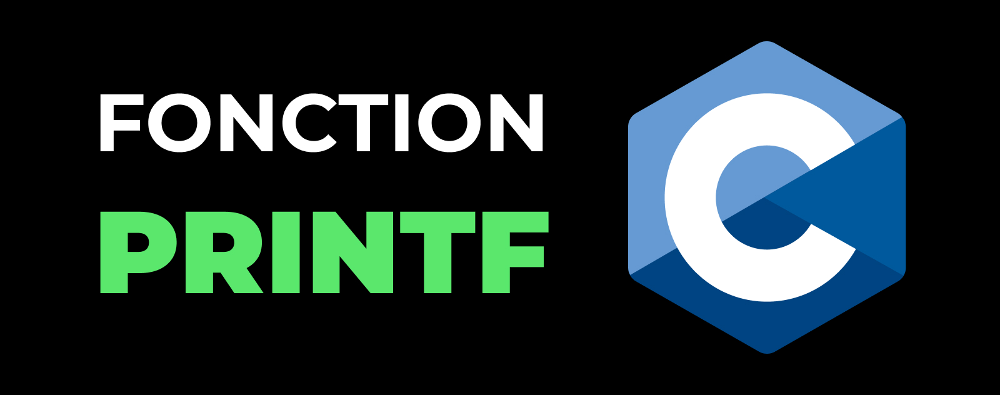
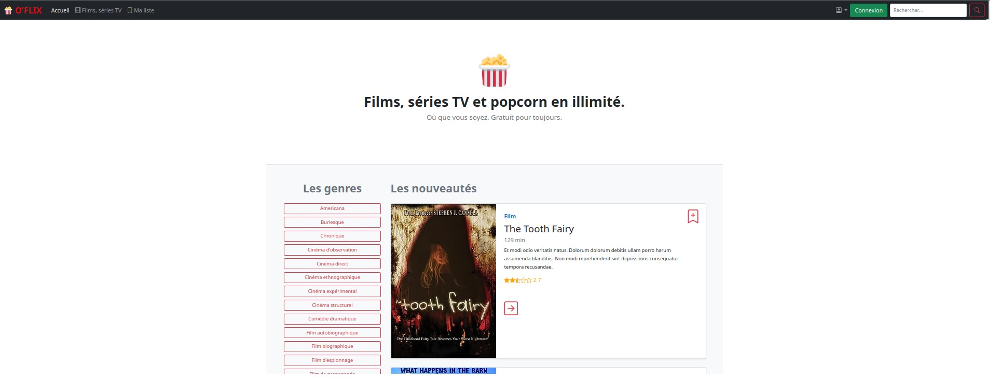
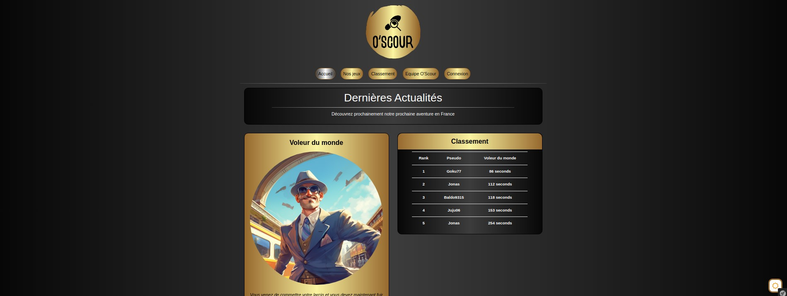

LOGICIEL MÉTIER · AUTOMATISATION
REVERSO
Application desktop en production qui centralise et automatise la gestion des contrats, commissions et clôtures mensuelles.
Voir le projet →Études de cas
Une sélection de logiciels et d’expériences concrètes. Les projets de formation restent accessibles, sans prendre le pas sur les réalisations les plus proches du terrain.

Application desktop en production qui centralise et automatise la gestion des contrats, commissions et clôtures mensuelles.
Voir le projet →
SaaS multi-utilisateurs pour coachs indépendants : réservations, paiements, permissions et back-office.
Voir l’étude de cas →
Plateforme de réservation sportive avec espace client, administration et paiement.
Voir le projet →
Site vitrine orienté clarté de l’information, accessibilité et prise de contact.
Voir le projet →
API REST inspirée d’Airbnb : modélisation relationnelle, SQLAlchemy et sérialisation.
Voir le projet →
Interpréteur de commandes UNIX en C : processus, mémoire, parsing et gestion d’erreurs.
Voir le projet →
Reproduction de printf en C, centrée sur les arguments variadiques et une architecture extensible.
Voir le projet →
Catalogue de films et séries développé avec PHP et Symfony.
Voir le projet →
Jeu d’énigmes web avec progression et validation des réponses.
Voir le projet →